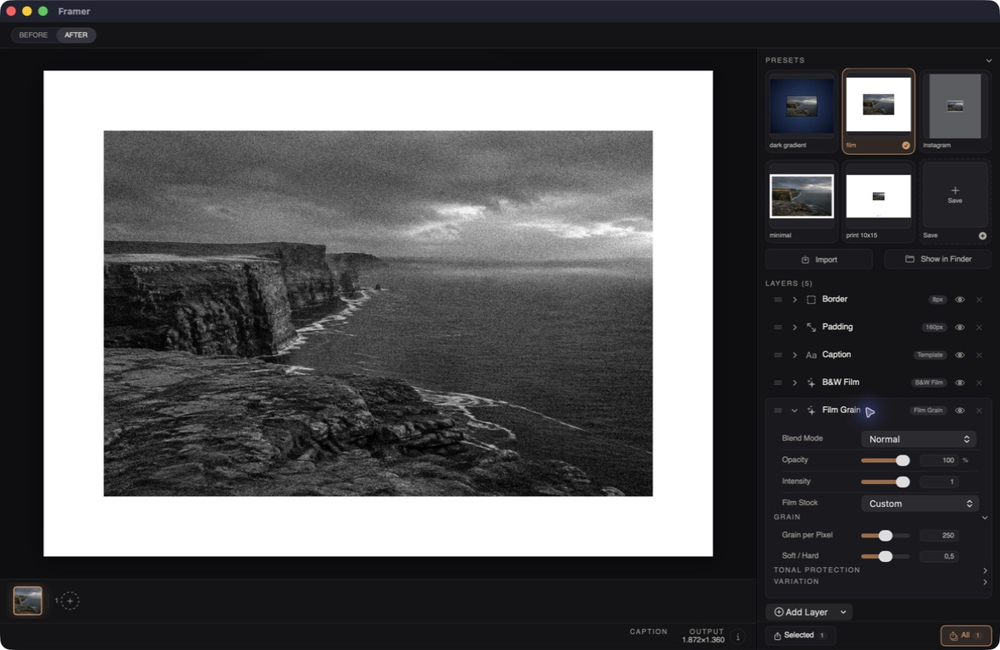
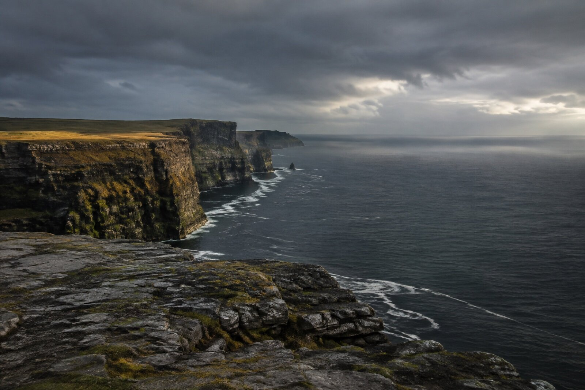
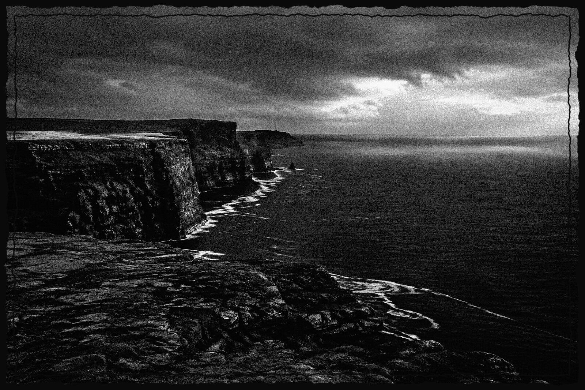
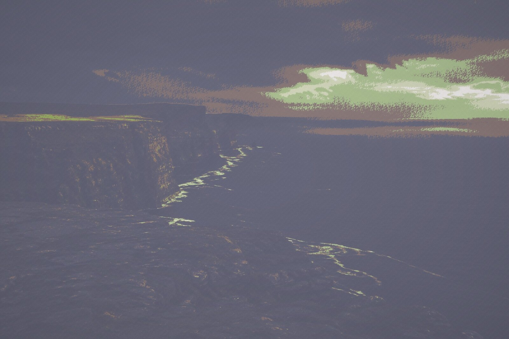
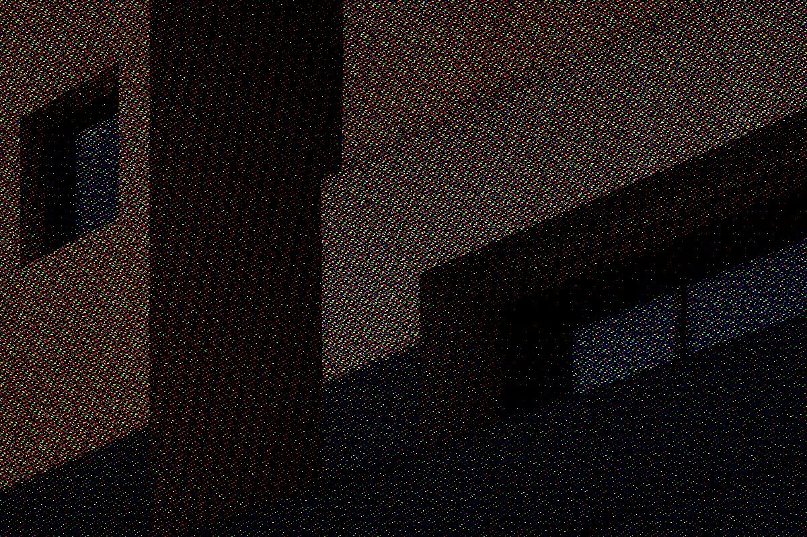
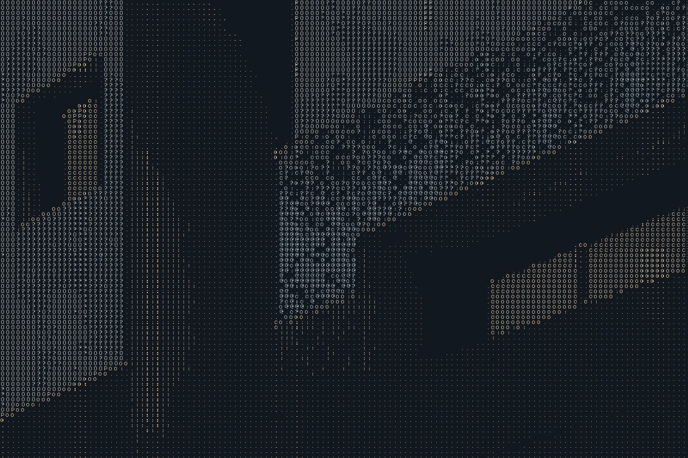
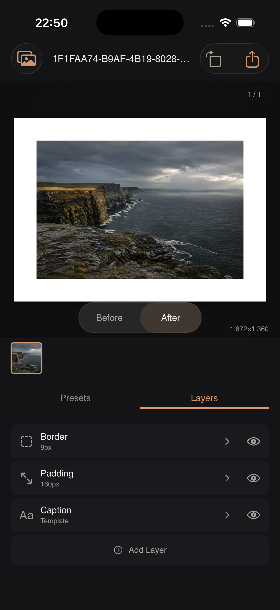

Build your look
Stack frames, captions, color LUTs, grain, and effects. Reorder layers to change how they work together.
Open-source photo finishing
The frame. The grain. That last bit of character.
Make it yours with a native photo editor and a CLI for the whole batch.
CLI for Apple Silicon · macOS 14+
macOS and iOS apps available as source builds

01 / A little more character
Start with a preset. Add a layer, adjust the details, and see the finish as you go.
Stack frames, captions, color LUTs, grain, and effects. Reorder layers to change how they work together.
Compare the original and the finished image in the editor. Fine-tune the effect with a live preview.
Save app presets for your next edit. Use YAML recipes and the CLI to apply a consistent finish to a folder of photos.
02 / In the darkroom
A monochrome film response, textured grain, and a rough border. Three layers, one finished image.


Drag the slider, or use the arrow keys.
B&W Film / Kodak Tri-X 400 response · Film Grain · Rough Border

Color / Distant Past
Muted color and a faded warmth for a different take on the same coast.
Get the recipe
Shader / Color halftone
Turn light, shadow, and color into a print-like field of halftone texture.
Get the recipe
Shader / ASCII
Rebuild the image from characters, keeping the geometry and color beneath.
Get the recipeEvery finish above was rendered with Framer v2.2.0. See the original architecture image
03 / At your desk. In your hand.
Browse your photo library on macOS, shape a look with the layer controls, and export a batch. On iOS, work with the same core image engine in an interface made for touch.
The iOS app is in active development. Both apps currently require a source build in Xcode.

04 / Make something yours
Free, open source, and built with Swift. Choose the CLI download or build the native apps from source.
Ready to run / Terminal
The v2.2.0 package is an unsigned command-line executable for Apple Silicon Macs running macOS 14 or later.
Download both files into the same folder, then run:
shasum -a 256 -c SHA256SUMS
tar -xzf framer-v2.2.0-macos-arm64.tar.gz
./framer --versionKeep framer_FramerCore.bundle beside the executable; it contains the shaders and ASCII atlases. Texture overlays require the source assets.
After verifying the checksum, remove the quarantine flag from the downloaded executable and retry:
xattr -d com.apple.quarantine ./framerBuild it yourself / Xcode
Build for macOS 14+ or iOS 17+. You’ll need Xcode, Git LFS, and XcodeGen.
git clone https://github.com/arthursoares/framer.git
cd framer
git lfs install
git lfs pull
xcodegen generate
open Framer.xcodeprojChoose the Framer scheme for macOS or FramerMobile for iOS. Select your signing team for a device build. Git LFS downloads the texture assets.
One look. A whole folder.
Download the coastal film YAML recipe into your CLI folder, then apply it to your own photos.
./framer -i photos/ -o finished/ \
--config coast-film.yamlNew in v2.2.0: clearer imports, better comparison controls, and safer batch exports. Read the release notes
{kind=link}
{kind=link}
{kind=link}
{kind=link}
{kind=link}
{kind=link}